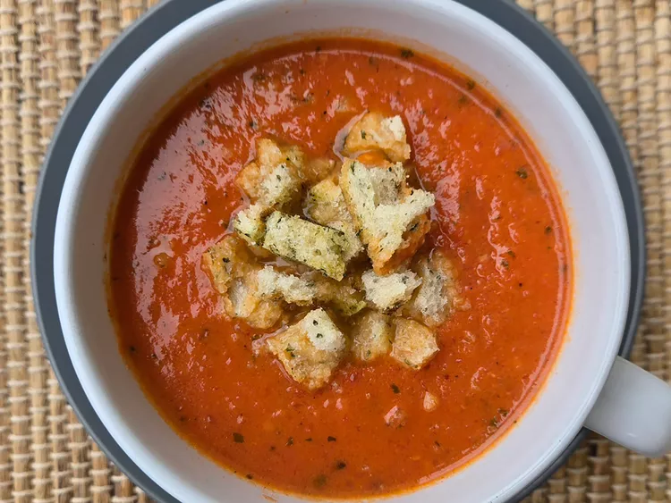

Creamy Tomato Soup

Description
This creamy tomato soup is a timeless dish that's soothing, a bit tangy, and with a lively hue. In this recipe, caramelizing the onions and garlic deepens the flavor, while thick cream enriches the soup's luxurious texture.
Ingredients
- cooking spray
- 1 head garlic
- 1 yellow onion
- 2 tablespoons olive oil
- 2 (28 ounce) cans whole peeled San Marzano tomatoes, undrained
- 1 cup vegetable stock or chicken stock
- 2 tablespoons agave syrup
- 8 sprigs fresh basil, coarsely chopped
- 8 sprigs fresh oregano, coarsely chopped
- 1 teaspoon red pepper flakes
- 1/2 cup heavy cream or half-and-half
- salt and freshly ground black pepper to taste
Steps
- Preheat the oven to 400 degrees F (200 degrees C). Spray a baking sheet sheet with cooking spray. Place garlic bulb and onion on the prepared sheet.
- Roast until very tender, 40 to 45 minutes; remove from oven and let cool until cool enough to handle.
- Chop half the onion; release 4 garlic cloves. Set aside remaining onion and garlic.
- Heat olive oil in a Dutch oven over medium heat. Add chopped roasted onions and 4 roasted garlic cloves to the hot oil, and cook and stir until fragrant, up to 1 minute.
- Add both cans of San Marzano tomatoes (including juice), vegetable stock, and agave syrup. Bring to a simmer and cook until thickened, about 15 minutes.
- Carefully transfer tomatoes and some of the liquid, remaining onion, remaining garlic, fresh basil, and fresh oregano into a food processor or blender. Blend until there are no chunks.
- Add soup mixture back into the Dutch oven along with heavy cream. Season with salt and pepper. Simmer on low to medium heat for 5 to 10 minutes to allow flavors to meld together.
Home